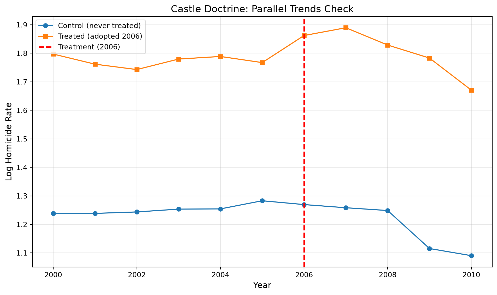
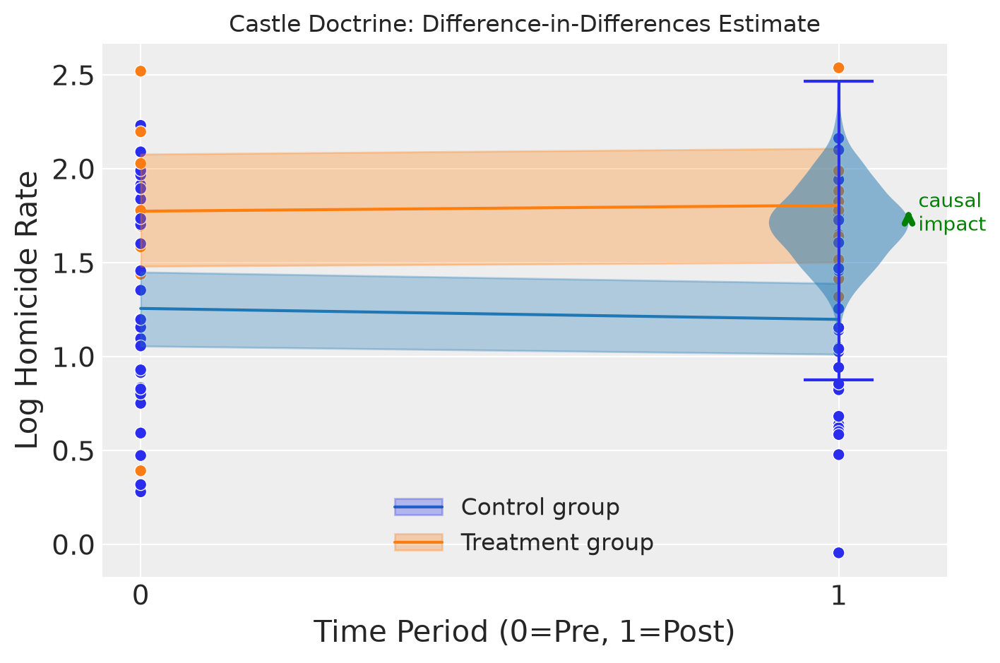
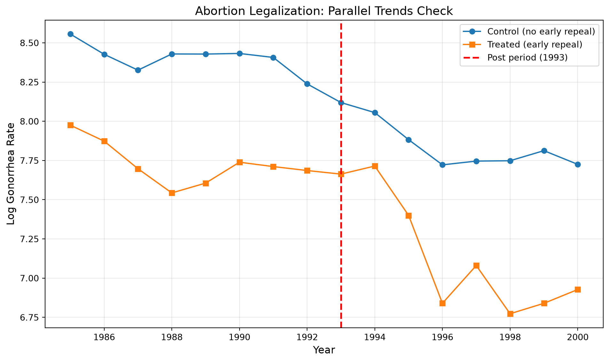
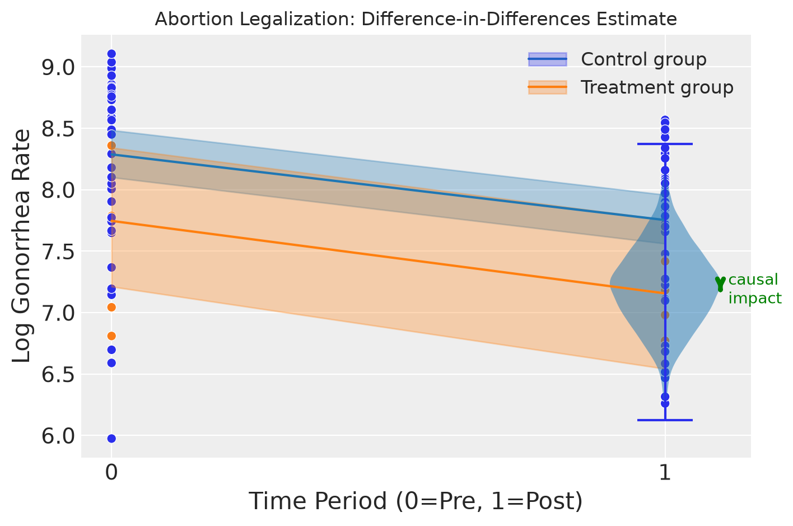

import warnings
warnings.filterwarnings("ignore")
import numpy as np
import pandas as pd
import matplotlib.pyplot as plt
import causalpy as cp
# Add the src directory to path for our data utilities
import sys
sys.path.insert(0, "../src")
from mixtape_causalpy import load_castle, load_abortion
%matplotlib inlineChapter 9: Difference-in-Differences
Causal Inference: The Mixtape → CausalPy
Mixtape chapter: Difference-in-Differences
CausalPy method: DifferenceInDifferences
Overview
Difference-in-Differences (DiD) is one of the most widely used identification strategies in applied economics. It compares the change in outcomes over time between a treatment group and a control group, under the assumption that both groups would have followed parallel trends in the absence of treatment.
This notebook covers:
- Castle Doctrine — Effect of “Stand Your Ground” laws on homicide rates
- Abortion Legalization — Effect of early abortion access on gonorrhea rates
What we’ll cover
- Data exploration and parallel trends visualization
- Simple 2×2 DiD estimation with CausalPy
- Interpretation of the Average Treatment Effect on the Treated (ATT)
- Comparison to Mixtape results
Important Note on Staggered DiD
The Mixtape examples use staggered adoption designs where different units receive treatment at different times. CausalPy’s current DifferenceInDifferences implementation is designed for the simple 2×2 case (one treated group, one control group, pre and post periods).
For staggered DiD, see: - CausalPy PR #621 (staggered DiD support) - Recent literature on issues with TWFE in staggered settings (Goodman-Bacon, Callaway & Sant’Anna, Sun & Abraham)
In this notebook, we adapt the examples to work with CausalPy’s 2×2 framework.
Mixtape files implemented
| File | Description | Status |
|---|---|---|
castle_1.py |
Castle doctrine - basic DiD | ✅ |
castle_2.py |
Castle doctrine - event study | ⏭️ (staggered) |
castle_3.py |
Castle doctrine - event study plot | ⏭️ (staggered) |
castle_4.py |
Castle doctrine - alternative plot | ⏭️ (staggered) |
castle_5.py |
Castle doctrine - robustness | ⏭️ (empty) |
abortion_dd.py |
Abortion legalization DiD | ✅ |
abortion_dd2.py |
Abortion DiD variations | ✅ |
Setup
Example 1: Castle Doctrine and Homicide Rates
The Castle Doctrine (also known as “Stand Your Ground” laws) expands the legal right to use deadly force in self-defense. The Mixtape examines whether these laws increased homicide rates.
Key details: - Outcome: Log homicide rate (l_homicide) - Treatment: Adoption of Castle Doctrine (post = 1 after adoption) - Units: U.S. states - Time period: 2000-2010
Adapting to 2×2 DiD
Since CausalPy uses a 2×2 framework, we’ll: 1. Select states that adopted in 2006 (the largest cohort) as the treated group 2. Use never-treated states as the control group 3. Compare pre-2006 to post-2006 periods
# Load the data
castle = load_castle()
print(f"Dataset shape: {castle.shape}")
print(f"\nYears: {sorted(castle['year'].unique())}")
print(f"\nStates: {castle['state'].nunique()}")Dataset shape: (550, 185)
Years: [np.int16(2000), np.int16(2001), np.int16(2002), np.int16(2003), np.int16(2004), np.int16(2005), np.int16(2006), np.int16(2007), np.int16(2008), np.int16(2009), np.int16(2010)]
States: 50# Examine treatment timing
treatment_dates = castle.groupby("state")["treatment_date"].first()
print("Treatment adoption by year:")
print(treatment_dates.value_counts().sort_index())
# Identify never-treated states
never_treated = castle.groupby("state")["post"].max()
never_treated_states = never_treated[never_treated == 0].index.tolist()
print(f"\nNever-treated states: {len(never_treated_states)}")
# Identify states that adopted in 2006
adopted_2006 = treatment_dates[treatment_dates == 2006].index.tolist()
print(f"States adopting in 2006: {len(adopted_2006)}")
print(adopted_2006)Treatment adoption by year:
treatment_date
2005.0 3
2006.0 11
2007.0 4
2008.0 2
2009.0 1
Name: count, dtype: int64
Never-treated states: 29
States adopting in 2006: 11
['Alabama', 'Georgia', 'Indiana', 'Kansas', 'Kentucky', 'Louisiana', 'Michigan', 'Mississippi', 'Oklahoma', 'South Carolina', 'South Dakota']# Create simplified 2x2 DiD dataset
# Treated: states that adopted in 2006
# Control: never-treated states
# Filter to our groups
castle_2x2 = castle[castle["state"].isin(adopted_2006 + never_treated_states)].copy()
# Create group indicator (1 = treated, 0 = control)
castle_2x2["group"] = castle_2x2["state"].isin(adopted_2006).astype(int)
# Create post_treatment indicator (1 = 2006 or later)
castle_2x2["post_treatment"] = (castle_2x2["year"] >= 2006).astype(int)
# Create unit identifier (required by CausalPy)
castle_2x2["unit"] = castle_2x2["state"]
print(f"2x2 dataset shape: {castle_2x2.shape}")
print(f"\nGroup distribution:")
print(castle_2x2.groupby(["group", "post_treatment"]).size().unstack())2x2 dataset shape: (440, 188)
Group distribution:
post_treatment 0 1
group
0 174 145
1 66 55Visualize Parallel Trends
Before running DiD, we should check whether treated and control groups followed similar trends pre-treatment. This is the key identifying assumption.
# Plot average outcomes by group over time
fig, ax = plt.subplots(figsize=(10, 6))
# Calculate group means by year
group_means = castle_2x2.groupby(["year", "group"])["l_homicide"].mean().unstack()
# Plot
ax.plot(
group_means.index, group_means[0], "o-", label="Control (never treated)", color="C0"
)
ax.plot(
group_means.index, group_means[1], "s-", label="Treated (adopted 2006)", color="C1"
)
# Add vertical line at treatment
ax.axvline(x=2006, color="red", linestyle="--", linewidth=2, label="Treatment (2006)")
ax.set_xlabel("Year", fontsize=12)
ax.set_ylabel("Log Homicide Rate", fontsize=12)
ax.set_title("Castle Doctrine: Parallel Trends Check", fontsize=14)
ax.legend()
ax.grid(True, alpha=0.3)
plt.tight_layout()
plt.show()
CausalPy Difference-in-Differences Estimation
Now we’ll estimate the DiD effect using CausalPy’s DifferenceInDifferences class.
# For CausalPy DiD, we need a simpler time structure
# Aggregate to pre/post periods
castle_did = castle_2x2.copy()
# Convert to pre (0) and post (1) time periods
castle_did["t"] = castle_did["post_treatment"].astype(float)
# Aggregate by state and period
castle_agg = (
castle_did.groupby(["unit", "group", "t", "post_treatment"])
.agg({"l_homicide": "mean"})
.reset_index()
)
# Rename outcome
castle_agg = castle_agg.rename(columns={"l_homicide": "y"})
print("Aggregated data for DiD:")
print(castle_agg.head(10))
print(f"\nShape: {castle_agg.shape}")Aggregated data for DiD:
unit group t post_treatment y
0 Alabama 1 0.0 0 1.988068
1 Alabama 1 1.0 1 1.991113
2 Arkansas 0 0.0 0 1.837906
3 Arkansas 0 1.0 1 1.828874
4 California 0 0.0 0 1.913331
5 California 0 1.0 1 1.760559
6 Colorado 0 0.0 0 1.352683
7 Colorado 0 1.0 1 1.139777
8 Connecticut 0 0.0 0 1.095385
9 Connecticut 0 1.0 1 1.254133
Shape: (80, 5)# Run CausalPy DiD
sample_kwargs = {
"tune": 1000,
"draws": 1000,
"chains": 2,
"cores": 1, # Single core for macOS Jupyter compatibility
"target_accept": 0.95,
"progressbar": True,
"random_seed": 42,
}
castle_result = cp.DifferenceInDifferences(
castle_agg,
formula="y ~ 1 + group * post_treatment",
time_variable_name="t",
group_variable_name="group",
model=cp.pymc_models.LinearRegression(sample_kwargs=sample_kwargs),
).fit()Initializing NUTS using jitter+adapt_diag...
Sequential sampling (2 chains in 1 job)
NUTS: [beta, y_hat_sigma]Sampling 2 chains for 1_000 tune and 1_000 draw iterations (2_000 + 2_000 draws total) took 1 seconds.
We recommend running at least 4 chains for robust computation of convergence diagnostics
Sampling: [y_hat]
Sampling: [y_hat]
Sampling: [y_hat]
Sampling: [y_hat]
Sampling: [beta, y_hat, y_hat_sigma]
Sampling: [y_hat]
Sampling: [y_hat]
Sampling: [y_hat]# View the results
castle_result.summary()===========================Difference in Differences============================
Formula: y ~ 1 + group * post_treatment
Results:
Causal impact = 0.09$CI_{94\%}$[-0.42, 0.58]
Model coefficients:
Intercept 1.3, 94% HDI [1.1, 1.4]
group 0.52, 94% HDI [0.15, 0.86]
post_treatment -0.058, 94% HDI [-0.34, 0.21]
group:post_treatment 0.09, 94% HDI [-0.39, 0.6]# Plot the DiD result
fig, ax = castle_result.plot(show=False)
ax.set_xlabel("Time Period (0=Pre, 1=Post)")
ax.set_ylabel("Log Homicide Rate")
ax.set_title("Castle Doctrine: Difference-in-Differences Estimate")
plt.tight_layout()
plt.show()
Interpretation
The causal impact represents the Average Treatment Effect on the Treated (ATT) — the estimated change in log homicide rates attributable to Castle Doctrine adoption.
Key findings: - The coefficient on group:post_treatment is the DiD estimate - CausalPy provides Bayesian credible intervals for uncertainty quantification - Compare this to the Mixtape’s result from castle_1.py which uses weighted least squares with clustered standard errors
Example 2: Abortion Legalization and Gonorrhea Rates
This example examines whether early access to legal abortion (in states that legalized before Roe v. Wade) affected health outcomes, using gonorrhea rates as a proxy.
Key details: - Outcome: Log gonorrhea rate (lnr) - Treatment: Early abortion legalization (repeal = 1 for early-legalizing states) - Units: U.S. states × age cohorts - Time period: 1985-2000
# Load the data
abortion = load_abortion()
print(f"Dataset shape: {abortion.shape}")
# Filter to non-missing outcome
abortion = abortion[~pd.isnull(abortion["lnr"])].copy()
print(f"After dropping missing lnr: {abortion.shape}")Dataset shape: (19584, 39)
After dropping missing lnr: (17921, 39)# Key columns
print("Key columns:")
print(abortion[["fip", "year", "repeal", "lnr", "bf15"]].describe())Key columns:
fip year repeal lnr bf15
count 17921.000000 17921.000000 17921.000000 17921.000000 17921.000000
mean 28.587803 1992.526367 0.103454 5.284549 0.041125
std 15.700468 4.605533 0.304559 2.129756 0.198585
min 1.000000 1985.000000 0.000000 -1.791759 0.000000
25% 16.000000 1989.000000 0.000000 3.538057 0.000000
50% 28.000000 1993.000000 0.000000 5.239628 0.000000
75% 41.000000 1997.000000 0.000000 7.124478 0.000000
max 56.000000 2000.000000 1.000000 10.006608 1.000000# For DiD, focus on the bf15 cohort (as in abortion_dd.py)
# bf15 = 1 indicates cohorts born after 1973 (affected by abortion legalization)
abortion_bf15 = abortion[abortion["bf15"] == 1].copy()
print(f"bf15 cohort shape: {abortion_bf15.shape}")
# Check repeal status
print(
f"\nRepeal states: {abortion_bf15['repeal'].sum() / len(abortion_bf15) * 100:.1f}%"
)bf15 cohort shape: (737, 39)
Repeal states: 10.9%# Prepare data for CausalPy DiD
# We'll create a simpler 2x2 by using 1985-1992 vs 1993-2000
abortion_did = abortion_bf15.copy()
# Treatment group (repeal states)
abortion_did["group"] = abortion_did["repeal"].astype(int)
# Post-treatment (1993 onwards - roughly when effects would manifest)
abortion_did["post_treatment"] = (abortion_did["year"] >= 1993).astype(int)
# Create unit identifier
abortion_did["unit"] = abortion_did["fip"].astype(int).astype(str)
# Time variable
abortion_did["t"] = abortion_did["post_treatment"].astype(float)
print(f"DiD dataset shape: {abortion_did.shape}")
print(f"\nGroup × Post distribution:")
print(abortion_did.groupby(["group", "post_treatment"]).size().unstack())DiD dataset shape: (737, 42)
Group × Post distribution:
post_treatment 0 1
group
0 320 337
1 40 40# Aggregate by state and period for cleaner DiD
abortion_agg = (
abortion_did.groupby(["unit", "group", "t", "post_treatment"])
.agg({"lnr": "mean"})
.reset_index()
)
abortion_agg = abortion_agg.rename(columns={"lnr": "y"})
print("Aggregated data:")
print(abortion_agg.head(10))
print(f"\nShape: {abortion_agg.shape}")Aggregated data:
unit group t post_treatment y
0 1 0 0.0 0 8.655707
1 1 0 1.0 1 8.102376
2 10 0 0.0 0 8.857288
3 10 0 1.0 1 8.505108
4 11 0 0.0 0 8.838610
5 11 0 1.0 1 8.474384
6 12 0 0.0 0 8.603951
7 12 0 1.0 1 7.899845
8 13 0 0.0 0 8.730507
9 13 0 1.0 1 7.656137
Shape: (102, 5)# Visualize parallel trends
fig, ax = plt.subplots(figsize=(10, 6))
# Calculate group means by year
yearly_means = abortion_did.groupby(["year", "group"])["lnr"].mean().unstack()
# Plot
ax.plot(
yearly_means.index,
yearly_means[0],
"o-",
label="Control (no early repeal)",
color="C0",
)
ax.plot(
yearly_means.index,
yearly_means[1],
"s-",
label="Treated (early repeal)",
color="C1",
)
# Add vertical line at "treatment" time
ax.axvline(x=1993, color="red", linestyle="--", linewidth=2, label="Post period (1993)")
ax.set_xlabel("Year", fontsize=12)
ax.set_ylabel("Log Gonorrhea Rate", fontsize=12)
ax.set_title("Abortion Legalization: Parallel Trends Check", fontsize=14)
ax.legend()
ax.grid(True, alpha=0.3)
plt.tight_layout()
plt.show()
# Run CausalPy DiD
abortion_result = cp.DifferenceInDifferences(
abortion_agg,
formula="y ~ 1 + group * post_treatment",
time_variable_name="t",
group_variable_name="group",
model=cp.pymc_models.LinearRegression(sample_kwargs=sample_kwargs),
).fit()Initializing NUTS using jitter+adapt_diag...
Sequential sampling (2 chains in 1 job)
NUTS: [beta, y_hat_sigma]Sampling 2 chains for 1_000 tune and 1_000 draw iterations (2_000 + 2_000 draws total) took 1 seconds.
We recommend running at least 4 chains for robust computation of convergence diagnostics
Sampling: [y_hat]
Sampling: [y_hat]
Sampling: [y_hat]
Sampling: [y_hat]
Sampling: [beta, y_hat, y_hat_sigma]
Sampling: [y_hat]
Sampling: [y_hat]
Sampling: [y_hat]# View the results
abortion_result.summary()===========================Difference in Differences============================
Formula: y ~ 1 + group * post_treatment
Results:
Causal impact = -0.06$CI_{94\%}$[-0.93, 0.82]
Model coefficients:
Intercept 8.3, 94% HDI [8.1, 8.5]
group -0.54, 94% HDI [-1.1, 0.082]
post_treatment -0.53, 94% HDI [-0.79, -0.26]
group:post_treatment -0.056, 94% HDI [-0.98, 0.74]# Plot the DiD result
fig, ax = abortion_result.plot(show=False)
ax.set_xlabel("Time Period (0=Pre, 1=Post)")
ax.set_ylabel("Log Gonorrhea Rate")
ax.set_title("Abortion Legalization: Difference-in-Differences Estimate")
plt.tight_layout()
plt.show()
Comparison to Mixtape Results
Key Differences
| Aspect | Mixtape | This Notebook |
|---|---|---|
| Estimation | Weighted OLS with clustered SEs | Bayesian linear regression |
| Treatment timing | Staggered (TWFE) | Simplified 2×2 |
| Uncertainty | Frequentist confidence intervals | Bayesian credible intervals |
| Covariates | Many controls included | None (simple specification) |
Why the Results May Differ
- Aggregation: We simplified the staggered design to 2×2, which changes the effective sample
- No covariates: Mixtape includes many control variables (demographics, spending, etc.)
- No weighting: Mixtape uses population weights
- Bayesian estimation: Different uncertainty quantification approach
This run
Castle Doctrine 2×2, random_seed=42: causal impact 0.09, 94% interval [-0.42, 0.58]. Abortion-legalization proxy: -0.06, 94% interval [-0.93, 0.82]. Both intervals include zero. These are not the Mixtape’s weighted, covariate-adjusted estimates.
Event Study (TODO)
The Mixtape’s castle_2.py through castle_4.py implement event study designs that show dynamic treatment effects over time. This requires: - Lead and lag indicators relative to treatment - Plotting coefficients with confidence/credible intervals
See CausalPy PR #584 for event study support.
TODO: Event Study Design
Not yet implemented: Event study designs require lead/lag indicators around treatment timing, which is related to staggered DiD.
Mixtape reference: castle_2.py, castle_3.py, castle_4.py
CausalPy tracking: - Event study plots: PR #584 - Staggered DiD: PR #621
When to revisit: Once CausalPy adds staggered DiD or event study support.
TODO: Triple Differences (DDD)
Not yet implemented: Triple differences adds a third differencing dimension and is not currently supported by CausalPy.
Mixtape reference: abortion_ddd.py, abortion_ddd2.py
CausalPy tracking: No current issue/PR for DDD
When to revisit: Would need a new experiment class in CausalPy.
Summary
In this notebook, we demonstrated CausalPy’s DifferenceInDifferences experiment using two classic examples from the Mixtape:
Castle Doctrine: Estimated the effect of Stand Your Ground laws on homicide rates by comparing states that adopted in 2006 to never-treated states
Abortion Legalization: Estimated the effect of early abortion access on gonorrhea rates
Key takeaways:
- CausalPy’s DiD is designed for the classic 2×2 case
- For staggered designs (common in applied work), adaptations are needed
- Bayesian estimation provides intuitive uncertainty quantification
- The
plot()method visualizes the counterfactual and causal impact
Next steps: - When CausalPy adds staggered DiD support, return to implement the full event study analyses - Consider adding covariates to the formula for richer specifications
References
- Mixtape chapter: https://mixtape.scunning.com/09-difference_in_differences
- CausalPy docs: https://causalpy.readthedocs.io
- Original papers:
- Cheng, C., & Hoekstra, M. (2013). “Does Strengthening Self-Defense Law Deter Crime or Escalate Violence?”
- Donohue, J., & Levitt, S. (2001). “The Impact of Legalized Abortion on Crime”
- Modern DiD literature:
- Goodman-Bacon, A. (2021). “Difference-in-Differences with Variation in Treatment Timing”
- Callaway, B., & Sant’Anna, P. (2021). “Difference-in-Differences with Multiple Time Periods”